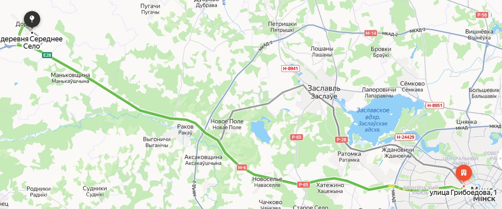
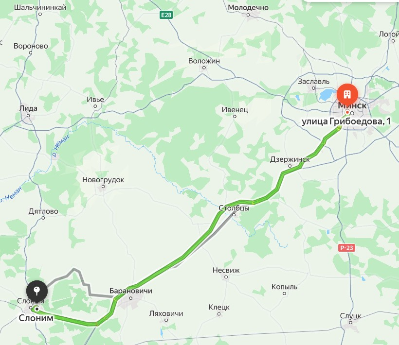
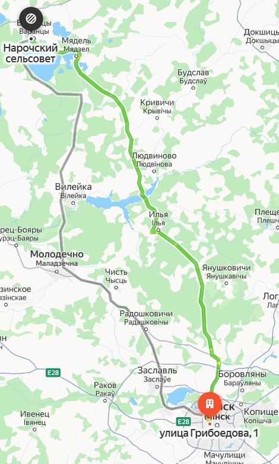
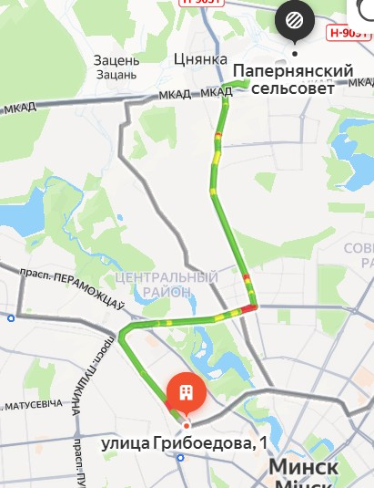
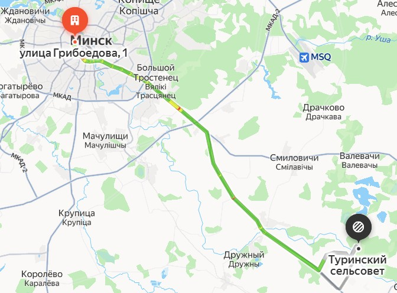

🧭 Грибные места с указанием маршрута 🧭
1. Налибокская пуща
Координаты: 54.0652° N, 26.7984° E
Район: Воложинский район
Трасса: М6 → Р24
Расстояние от дома: 105 км
2. Лесной массив около города Слоним
Координаты: 53.0926° N, 25.3594° E
Район: Слонимский район
Трасса: М1 → Р64
Расстояние от дома: 130 км
3. Лесной массив около озера Нарочь
Координаты: 54.9212° N, 26.7246° E
Район: Мядельский район
Трасса: М7 → Р58
Расстояние от дома: 120 км
4. Воложинские леса

Координаты: 54.0331° N, 26.5142° E
Район: Воложинский район
Трасса: М6
Расстояние от дома: 90 км
5. Минский район, урочище Заборье
Координаты: 53.9764° N, 27.5592° E
Район: Минский район
Трасса: М4
Расстояние от дома: 40 км
6. Пуховичский район, лесной массив
Координаты: 53.6412° N, 28.1537° E
Район: Пуховичский район
Трасса: М5
Расстояние от дома: 80 км